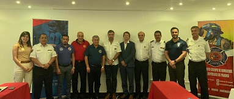

El 1 de agosto de 2019, la Secretaría de INSARAG participó en la segunda reunión anual del Consejo Directivo de la Organización de Bomberos Americanos (OBA: https://www.bomberosamericanos.org) para discutir de los próximos pasos en la implementación de la carta de entendimiento firmada entre la OBA y la Secretaría de INSARAG en febrero de 2019. La alianza estratégica entre INSARAG y OBA se centrará en promover la implementación de la metodología INSARAG en todos los países de la región de las Américas y, en particular, con las instituciones miembros de la OBA. Ambas partes acordaron elaborar un plan de trabajo con actividades concretas centradas en compartir información relevante sobre los próximos eventos clave con ambas redes, como la reunión de líderes de equipos USAR INSARAG en Chile del 9 al 11 de octubre, el apoyo específico de la OBA para implementar el Proceso de apoyo y reconocimiento externo de INSARAG (PAREI) de los procesos nacionales de acreditación USAR, y un apoyo potencial para crear cursos en línea de aprendizaje a distancia sobre la metodología INSARAG a través de la plataforma patrocinada por OBA. Ambas partes discutirán cómo colaborar en la realización de eventos de capacitación cara a cara con el objetivo de aumentar la capacidad en la región de contar con más expertos a los que se pueda recurrir como especialistas para facilitar los eventos de capacitación sobre coordinación USAR y fortalecimiento de capacidades.
Photo de izquiera a derecha: Lucía Vilariño Fiore, Directora Ejecutiva de OBA; Rafael Palomino, Vocal Académico de OBA; Marco España, Secretario de RR.II. de OBA; Carlos Ferlise, Presidente Saliente de OBA; Carlos Alfonso, Vicepresidente de OBA; Martín Cucalón de Ycaza, Presidente de OBA; Christophe Schmachtel, UNDAC & INSARAG Secretariat; Raúl Bustos Zavala, Vocal de OBA; Roberto Duque Mora, Secretario General de OBA; Sebastián Mocarquer Grout, Enlace OBA- INSARAG por Bomberos de Chile; Juan Carlos Subercaseaux, Coordinador Académico de OBA;
